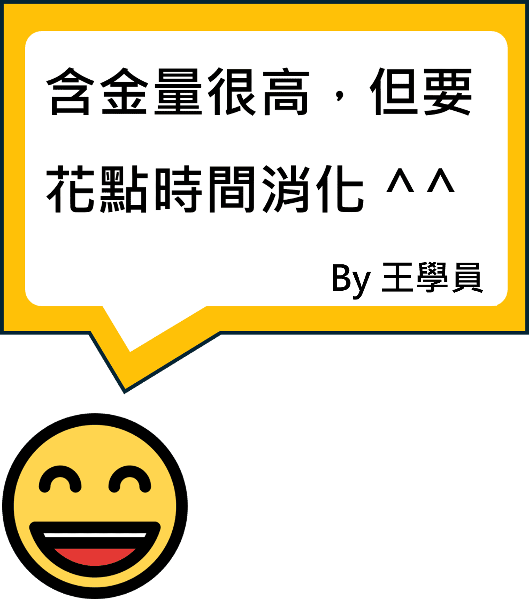
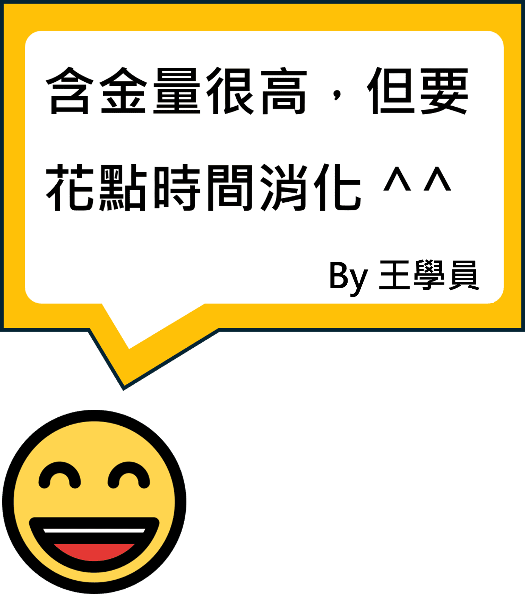

◆ 課程全名：【第二期】智能辦公 - 生成式 AI 實務應用與案例分析
◆ 開課期間：2024/07/27 ~ 2024/08/17
◆ 課程時間：每週六 09:00 ~ 12:00
◆ 課程時數：總計 12 小時（每週搭配 1 小時助教時間）
◆ 課程講師：鄭中嘉
◆ 課程助教：李浩維
◆ 課程對象：
- （1）企業中高階經理人
- （2）遠端辦公從業人員
- （3）數位行政工作人員
- （4）訂閱 AI 工具的決策者
- （5）欲提升與 AI 協作能力的您
◆ 課程簡介
本課程接軌生成式 AI 最新趨勢，為您帶來提升工作效率與品質的提升。
誠摯地邀請您一同學習，讓我們攜手開創數位行政 2.0！
本課程接軌生成式 AI 最新趨勢，為您帶來提升工作效率與品質的提升。
誠摯地邀請您一同學習，讓我們攜手開創數位行政 2.0！
◆ 課程細節
| 章節名稱 | 課程內容 |
|---|---|
| 【第一章】 生成式AI概述與關鍵字技巧 授課日期 2024/07/27 |
1. 生成式 AI 技術介紹 （1）人工智慧與 GPT 演進史 （2）生成式 AI 的基本概念與應用 2. 提高回答表現的關鍵字撰寫技巧 （1）TRIPO Model 思維框架 （2）Chain-of-Thought 思維框架 （3）Reflection 反思技巧 （4）Emotional Prompt 情緒提詞 （5）Few-shot Prompting 少樣本關鍵字撰寫 （6）溫度值設定與 Token 概念 3. 文字生成式 AI 工具 （1）Anthropic Claude （2）Microsoft Copilot （3）OpenAI ChatGPT （4）不同 LLM 工具說明與比較 4. 實際應用生成式 AI 工具 （1）網頁資訊檢索情境：MS Copilot （2）繁複文章解析情境：ChatPDF、ChatGPT （3）不同生成式 AI 服務成本計算與效益分析 |
【第二章】 文字生成式AI工具進階應用 授課日期 2024/08/03 |
1. 規範文件撰寫 （1）利用 Anthropic Claude 夾帶附件進行任務 （2）利用 Custom GPT 自行建置客製化 GPT 助理 2. 創意文案撰寫 （1）以 ESG / 新創提案為例 （2）實際使用上週提及的關鍵字撰寫技巧 3. 簡報快速製作 （1）利用 Gamma 從 0 到 1 生成完整簡報 （2）探討 Plus.ai 的實務應用情境 4. 其他實用圖表製作 （1）認識 Mermaid 語法 （2）利用文字生成式 AI 工具解析需求繪製心智圖 
|
| 【第三章】 客製會議記錄與自製AI助理 授課日期 2024/08/10 |
1. 會議記錄與語音轉錄實務 （1）不同種類的語音轉錄工具優缺點介紹 （2）實際根據上一周的錄影內容製作轉錄稿 （3）分析應該使用哪個文字生成式AI工具 （4）認識不同語言模型的關鍵字撰寫技巧 （5）客製化會議記錄的關鍵字模板 2. 【基礎】建置 ChatGPT 智能助理 （1）範例一：建置靈感助理，搭配手機使用。 （2）範例二：建置課程寫手，快速生成需求客表。 （3）範例三：建置公司客服，扮演內部知識庫系統。 3. 【進階】建置 ChatGPT 智能助理，結合 Action （1）範例一：串接 Google Calendar 自動建置行程 （2）範例二：串接 Notion 進行專案管理 4. 具象化虛擬助理，結合 AI 繪圖 （1）AI 繪圖工具生成主播圖像 （2）使用 ElevenLabs 生成相應的語音 （3）結合 D-ID 使人物產生合理的動作 
|
| 【第四章】 合規討論與專題報告 授課日期 2024/08/17 |
1. 國內外與生成式 AI 服務相關的政策 （1）歐盟 GDPR：強調資料主體的隱私權和數據保護 （2）行政院生成式 AI 指引 （3）相關的訴訟案件分析 （4）資安討論：辨識 Prompt Injection 攻擊行為 2. 學員專題報告 基於上課所學針對自身任務情境導入生成式AI工具，並於專題時間分享導入成果 3. 其他討論與未來精進管道 （1）ESG與生成式AI整合情境討論 （2）生成式AI未來展望 （3）後續精進管道 
|